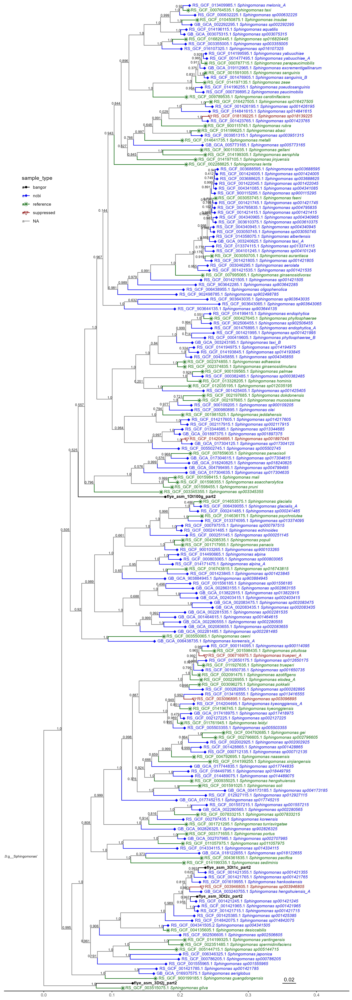
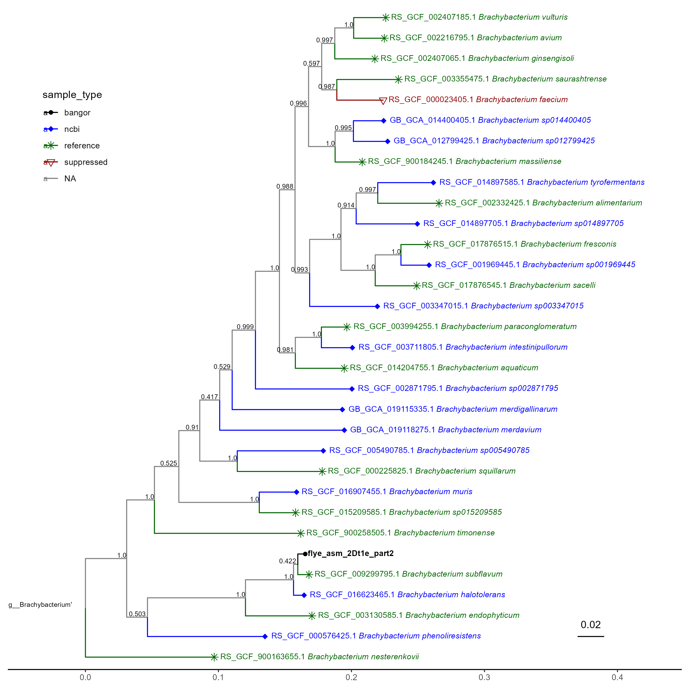
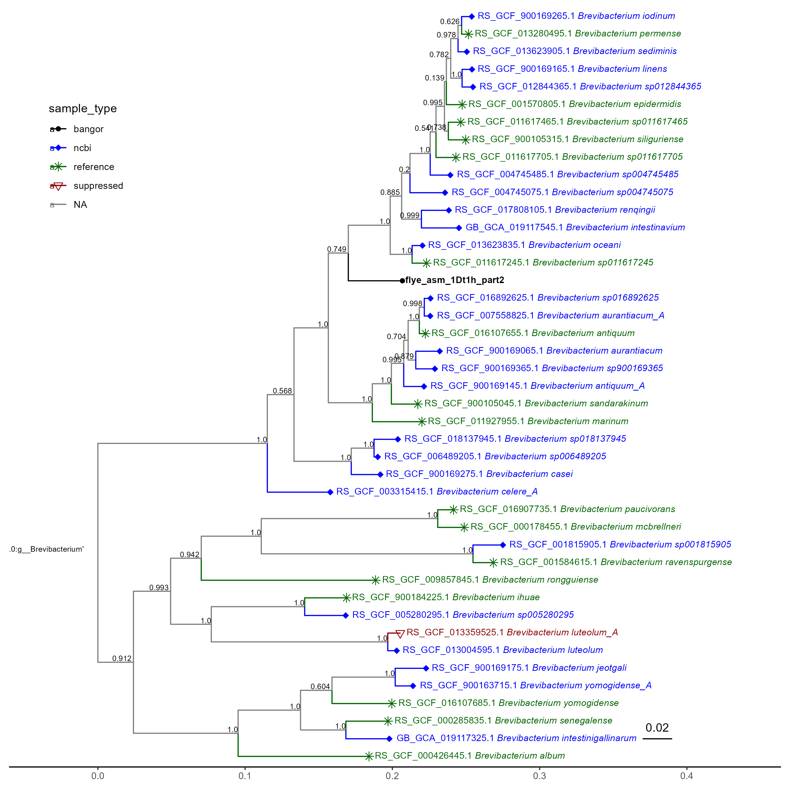
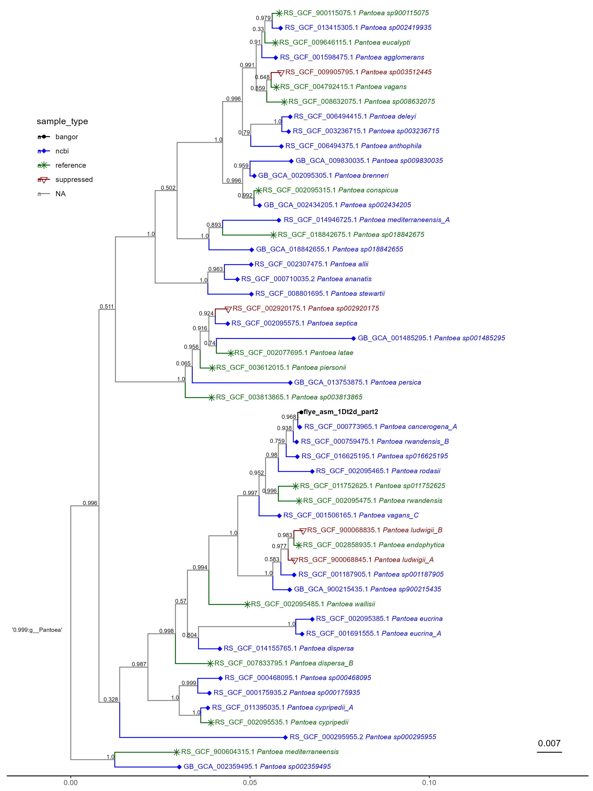
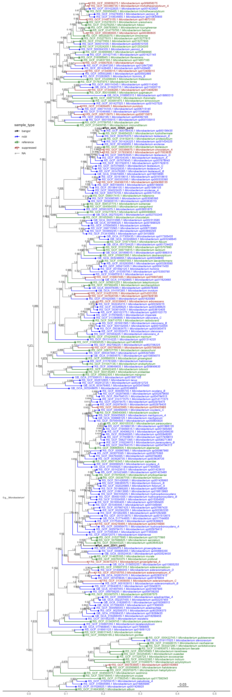

7 GTDB-TK de novo
7.1 Introduction
£bookmark citation: https://academic.oup.com/bioinformatics/article/36/6/1925/5626182
Earlier in the year I had used GTDB-TK to identify Genera for the 10 samples and create phylogenetic trees, this is described in Chapter 6. However, upon review of these trees I found oddities, errors that did not quite make sense.
I decided to take a closer look at the documentation for GTDB-TK to see what I had done exactly. I had initially used the classify_wf, it was here I discovered the de_novo_wf. It states:
“The de novo workflow infers new bacterial and archaeal trees containing all user supplied and GTDB-Tk reference genomes. The classify workflow is recommended for obtaining taxonomic classifications, and this workflow only recommended if a de novo domain-specific trees are desired. One should take the taxonomic assignments as a guide, but not as final classifications. In particular, no effort is made to resolve the taxonomic assignment of lineages composed exclusively of user submitted genomes.”
I took this to mean that the de_novo_workflow would be a more accurate way of estimating the taxonomic assignment of the samples. Though now I re-read it I am not so sure. I found a paper that discusses this, (chaumeil2022?). I then read this page, on a discussion board. From what I understand from all of this, Classify_wf gives good taxonomic assignments, but its trees are not perfect, and de_novo_wf is the opposite, it is weaker at assigning (explaining why that one sample without a major group was such an error for it) but spends more run-time making accurate trees. I shall have to dig up my work on classify, as from what I gather, it was not an error to run it.
7.2 Methods
The de_novo workflow takes the .fasta files for the 10 local samples and runs a few opperations, detailed in the documentation above, to place them in existing trees, these are output as newick .Nexml format. This project uses a few slurm scripts, as it is run on hawk. I produced this script to run it on hawk.
7.3 Results
7.4 Phylogenetic trees
7.4.1 Introduction
After de_novo_wf analysis is done, the trees can be crafted in R. However, it should be noted this process does not assign taxonomy to the samples one uploads, merely places them in a tree
7.4.2 Methods
the outputs from the GTDB-tk de_novo_wf, namely the .nexml tree file, can be read into R and modified to make more visually appealing, they can then be combined with metadata to find the names, though now I see these names may not be wholly accurate. I also toyed with the idea of one large, interactive tree, though the capability to do that well is beyond my current skill level. There was one sample for which a taxonomy could not be assigned, meaning I could not isolate it to include in the trees, thus I excluded it from further study, this perhaps was another error on my part I now see. This is done across several scripts £bookmark
7.4.3 Results



